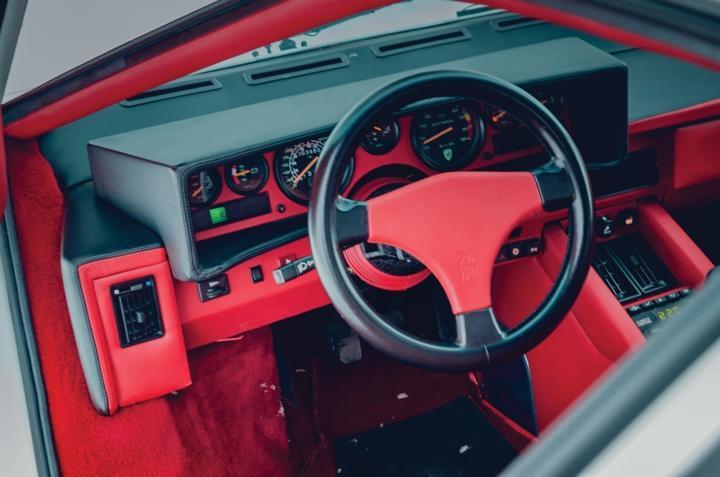

top 5 chiếc Lamborghini đồ cổ hiếm nhất thế giới
1.Lamborghini 400 GT 2+2
Nổi bật trong dàn siêu xe là Lamborghini 400 GT 2+2 năm 1967 - một trong những chiếc xe đầu tiên được sản xuất dưới thương hiệu Raging Bull.
Chiếc xe được đứng tên sở hữu trong 50 năm và đồng hồ thông số chỉ 65.000 km. Với trang bị nội thất da đen mạnh mẽ, chiếc Lamborghini thể thao cổ dự kiến sẽ được bán với giá từ 450.000 – 500.000 Euro (khoảng 12 – 13,6 tỉ đồng).
2. Espada 1970
Sở hữu diện mạo trắng “tinh khôi”
Chiếc xe được thiết kế bởi Marcello Gandini tại Bertone . Gandini đã lấy cảm hứng và tín hiệu từ hai chiếc xe trưng bày của mình từ năm 1967, Lamborghini Marzal và Jaguar Piraña.Espada là một chiếc GT bốn chỗ, bán cùng với 2 + 2 400GT và Miura động cơ đặt giữa . 1217 Espadas đã được tạo ra, biến nó thành mẫu Lamborghini thành công nhất cho đến khi mở rộng sản xuất Countach vào giữa những năm 1980.Tên tiếng Tây Ban Nha "Espada" ( phát âm là [esˈpaða] ) có nghĩa là " thanh kiếm ", ám chỉ thanh kiếm mà torero sử dụng để giết con bò đực trong Corrida.Trong mười năm sản xuất, chiếc xe đã trải qua một số thay đổi và ba loạt khác nhau đã được sản xuất. Đó là S1 (1968 19191970), S2 (1970 19191972) và S3 (1972191978). Mỗi mô hình đặc trưng thiết kế lại nội thất, trong khi chỉ có các chi tiết nhỏ được thay đổi ở bên ngoài.
Đối lập với vẻ ngoài là nội thất xanh, đen chủ đạo cùng những chi tiết gỗ “nhấn nhá” cổ điển. Chiếc xe rơi vào giá từ 160.000 – 200.000 Euro (khoảng 4,5 – 5,5 tỉ đồng).
3. Lamborghini Jarama 400 GT 2+2 năm 1971
Với mức giá dao động từ 130.000 – 180.000 Euro (khoảng 3,5 – 5 tỉ đồng), Lamborghini Jarama 400 GT 2+2 năm 1971 cũng là một chiếc xe được nhiều tay chơi xe cổ săn đón.
4. Lamborghini ’85 Jalpa
Đối với những người thích xe động cơ đặt sau, chiếc Lamborghini ’85 Jalpa màu vàng lạ mắt sẽ là một sự lựa chọn hoàn hảo.
Nội thất trang bị hoàn toàn với màu xanh nguyên bản khiến chiếc xe trở nên độc nhất, với giá bán dự kiến 100.000 – 125.000 Euro (khoảng 3- 3,5 tỉ đồng).
5. Lamborghini Countach 1991
Phiên bản Countach 1991 kỷ niệm 25 năm thương hiệu Lamborghini mang thiết kế trắng tinh, bắt mắt...
tương phản màu sắc với nội thất đỏ rực đẹp mắt, chiếc xe được bán với giá 250.000 – 300.000 Euro (khoảng 6,8 – 8 tỉ đồng).
